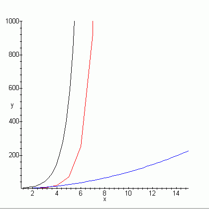

1. Програма за решаване на задачата - F.CPP.
Реализирани са два метода - търсене с връщане и динамично оптимиране.
2. Текст на задачата;
използват
се стандартните вход и изход.
3. Използван е компилатор Dev-C++ 4.0.
4. Използват се стандартните
вход и изход.
5. Сложност на алгоритмите за матрица n x
n:
- търсене с връщане (backtracking) - експоненциална, за матрица
само от единици броят на пътищата е приблизително O(3.7n);
реализирано с функция backtrack();
- динамично оптимиране (greedy) - O(n2 );
реализирано с функция dinam() по формулата:
F(i,j) = F(i-1,j) + F(i,
j-1).
В таблицата са дадени размерността n, n2 и
броя на пътищата за лабиринт без дупки.
| n | n2 | брой пътища | n | n2 | брой пътища | n | n2 | брой пътища |
| 1 | 1 | 1 | 6 | 36 | 252 | 11 | 121 | 184756 |
| 2 | 4 | 1 | 7 | 49 | 924 | 12 | 144 | 705432 |
| 3 | 9 | 6 | 8 | 64 | 3432 | 13 | 169 | 2704156 |
| 4 | 16 | 20 | 9 | 81 | 12870 | 14 | 196 | 10400600 |
| 5 | 25 | 70 | 10 | 100 | 48620 | 15 | 225 | 40116600 |
|  | Вид на входния файл F.inp:
1 n n 1 1 1 1 ... 1 1 1 1 1 ... 1 .... 1 1 1 1 ... 1 На графиката са дадени (отляво надясно):
Извод: само динамичнито оптимиране дава разумно време за работа на програмата.
|
6. Големина на входа (Dev C++):
-- максимални размери за данните за различни
типове данни:
| Types | bytes | max number* | digits | max n | max пътища |
| unsigned int = unsigned long | 4 | 4294967295 | 10 | 18 | 2333606220 |
| unsigned long long | 8 | 18446744073709551615 | 20 | 35 | 10006297401531025124 |
Литература.
Емил Келеведжиев, Динамично опримиране, Мусала Софт и Анубис,
София 2001.